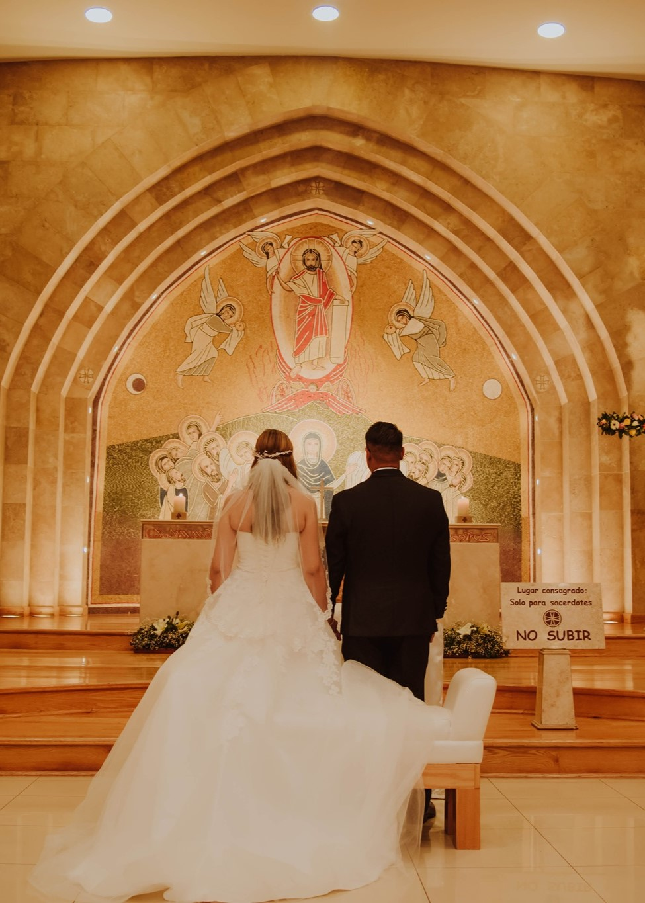
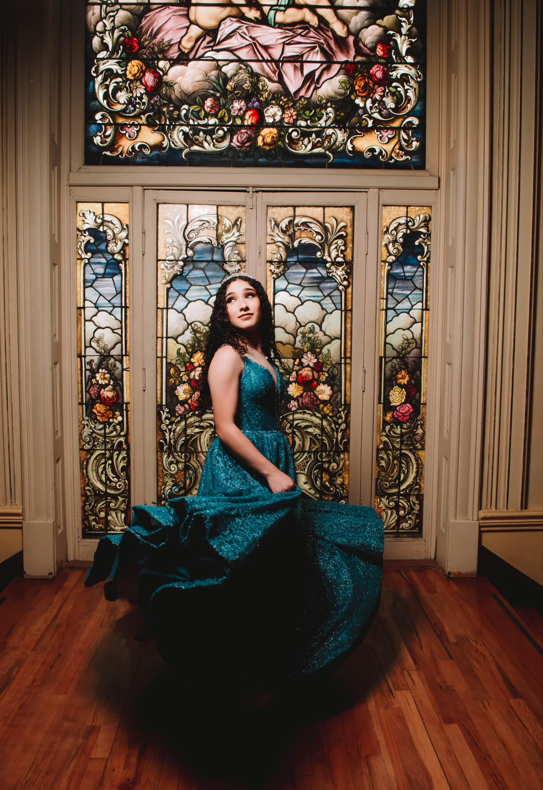

Galería de Ejemplos
Algunos de nuestros trabajos en sesiones fotográficas personales.


Descripción de Servicios
En Studio Shawty, sabemos que los eventos especiales son momentos únicos que merecen ser inmortalizados. Ofrecemos cobertura profesional para:
- Bodas: Capturamos cada instante del día más importante de tu vida, desde la ceremonia hasta la fiesta.
- 15 Años: Fotografía y video que retratan la emoción y el glamour de esta celebración única.
- Graduaciones: Celebra el fin de una etapa con fotos que te acompañarán toda la vida.
- Cumpleaños y Aniversarios: Registra cada momento de celebraciones personales o familiares.
Paquetes y Precios
Contamos con diferentes paquetes para adaptarnos a tus necesidades:
- Paquete Básico: Cobertura del evento por 4 horas. Incluye 50 fotos editadas. $100
- Paquete Completo: Cobertura de todo el evento, desde la preparación hasta la fiesta. Incluye 100 fotos editadas y video resumen. $160
- Paquete Premium: Incluye fotos impresas, álbum fotográfico personalizado, y video completo del evento. $300
Proceso de Trabajo
Nos aseguramos de que todo salga perfecto desde el inicio hasta la entrega final de las fotos y videos:
- Reunión inicial para conocer tus expectativas y preferencias.
- Cobertura completa del evento por fotógrafos profesionales.
- Entrega de fotos y videos editados de acuerdo a tus gustos, ya sea en formato digital o impreso.
Preguntas Frecuentes
- ¿Cómo reservo una fecha? Contáctanos lo antes posible para verificar disponibilidad. Recomendamos reservar con al menos 2 meses de anticipación.
- ¿Cuánto tiempo tarda la entrega de fotos y videos? La entrega de fotos digitales suele tardar entre 2 y 3 semanas, mientras que los videos completos se entregan en 4 semanas.
- ¿Puedo personalizar mi paquete? Sí, ofrecemos la opción de personalizar paquetes según tus necesidades específicas.